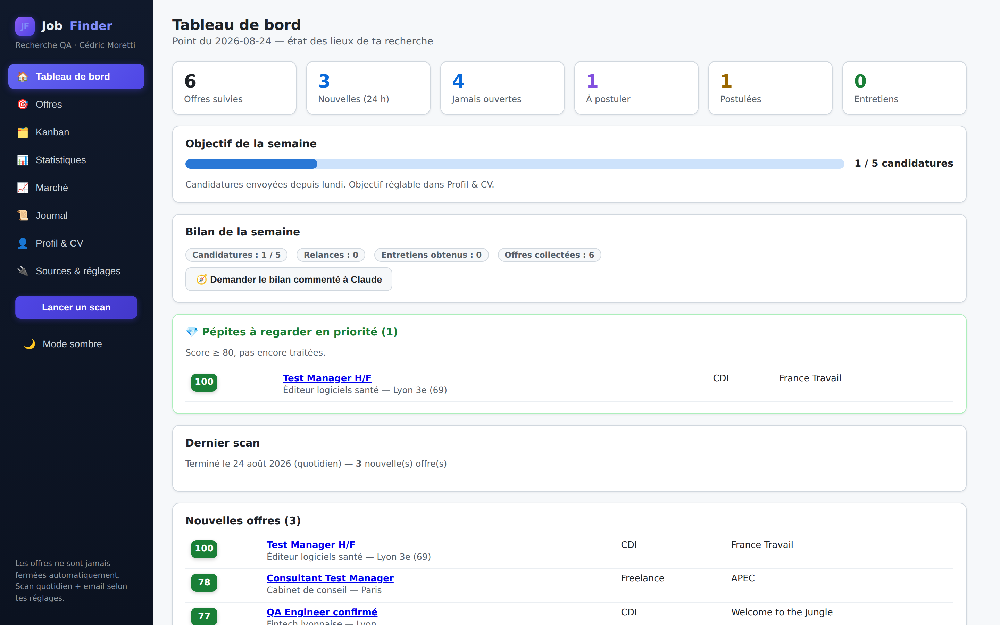
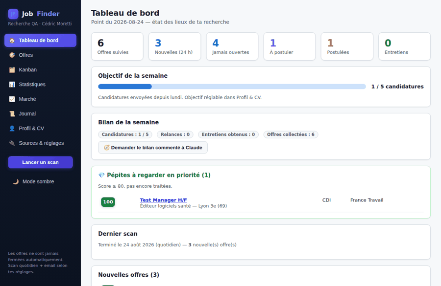
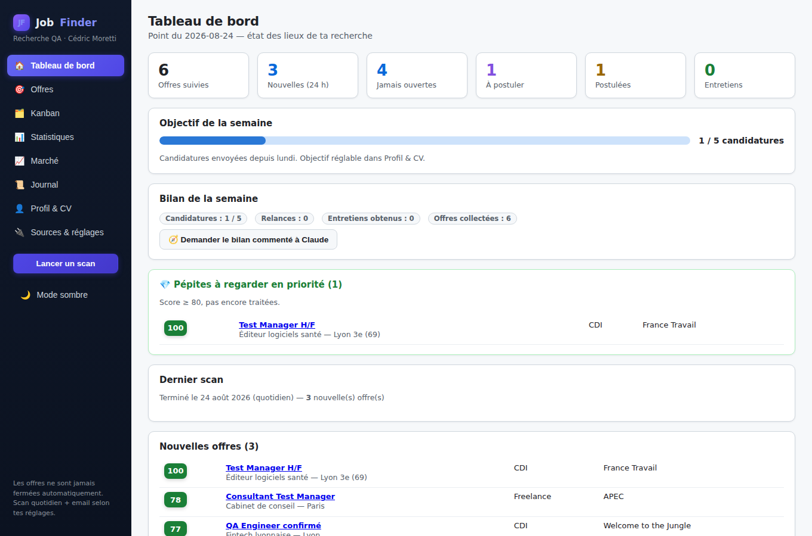
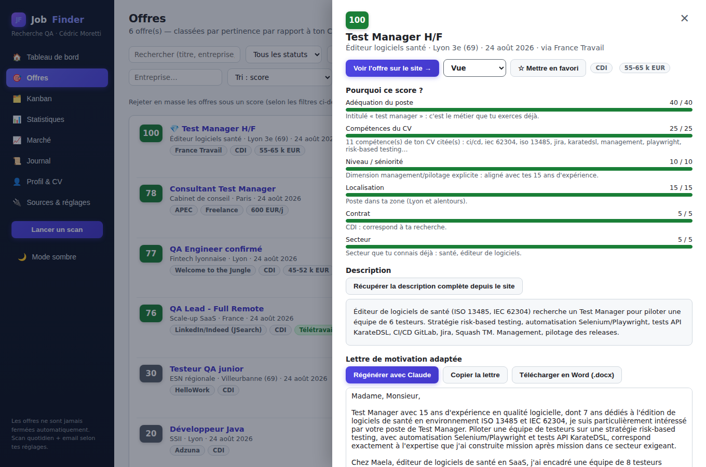
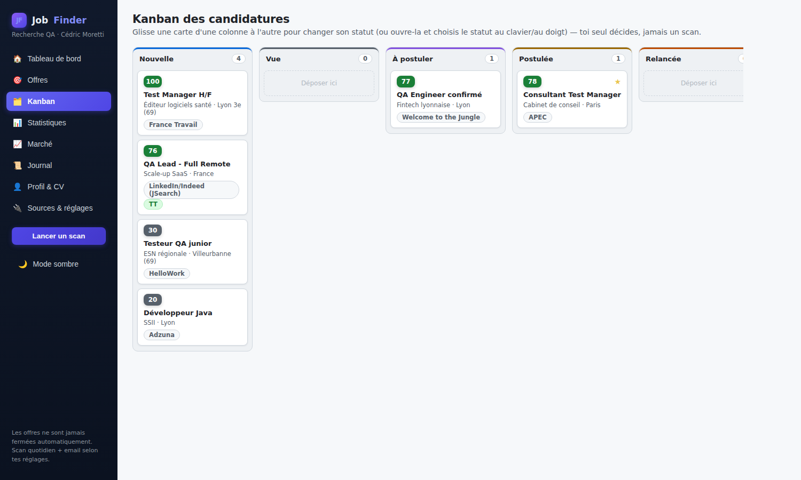
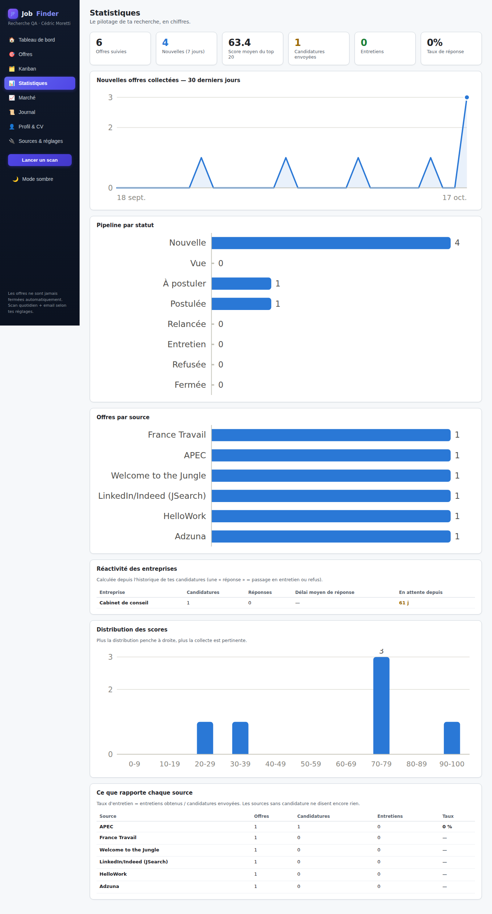

L'application qui cherche à ta place : les sites d'emploi scannés chaque matin, un classement 0-100 calibré sur ton CV, et des lettres de motivation générées par Claude.
La démo tourne dans ton navigateur avec des données d'exemple. L'application complète s'installe en local (« Ouvrir mon appli locale » fonctionne si elle est lancée).

Chaque règle métier (scoring, dédoublonnage, statuts, confidentialité) est testée — y compris contre les vrais sites (APEC, HelloWork) et par mutation testing, pas seulement avec des données bouchonnées.
L'affinage du score et les lettres de motivation passent par ta session Claude Code existante — aucune clé Anthropic séparée à payer, aucune donnée envoyée à un tiers inconnu.
France Travail, Adzuna, JSearch, Welcome to the Jungle, APEC, HelloWork — une même offre vue sur plusieurs sites ne fait qu'une seule fiche, par titre ET entreprise, jamais par un simple rapprochement de texte.
Score 0-100 expliqué critère par critère : adéquation du poste, compétences citées, séniorité, localisation Lyon / remote, contrat, secteur.
Scan automatique chaque matin, tableau de bord « état des lieux » et email récapitulatif des nouvelles offres classées.
Pipeline Kanban en glisser-déposer, statuts, favoris, notes, relances à J+7, fiches de préparation d'entretien — piloté par toi seul.
KPI, activité, distribution des scores, réactivité des entreprises ; pondérations du score et requêtes de scan configurables ; mode sombre.
Claude joue le recruteur : il pose ses questions à partir de l'annonce et de ton CV, commente tes réponses, et te dit ce qu'il cherche vraiment. Entretiens datés, comptes-rendus et relances suivis.
Compétences les plus demandées et celles qui manquent à ton CV, entreprises qui recrutent, salaires observés dans les annonces, repérage des offres republiées en boucle.
Un PDF listant tes démarches datées — candidatures, relances, entretiens — sur la période de ton choix, prêt pour l'actualisation.
Interface adaptée au mobile et installable sur l'écran d'accueil, pour consulter tes offres et tes entretiens partout dans la maison.
Une offre n'est jamais supprimée ni fermée par un scan : si elle disparaît de sa source, elle est simplement marquée « plus en ligne ? ».





Python 3.11+ (coche « Add python.exe to PATH ») et Node.js LTS.
git clone https://github.com/Opaland/Job-Finder.git puis double-clique sur
start.bat — tout s'installe et l'appli s'ouvre sur
http://127.0.0.1:8000.
France Travail, Adzuna et JSearch dans le fichier .env —
guide pas-à-pas dans le README.
Sans elles, APEC et HelloWork sont déjà scannées — environ 240 offres lyonnaises.
« L'idée : te mâcher le travail de recherche et ne présenter que les offres les plus pertinentes, sans jamais fermer une offre à ta place. »